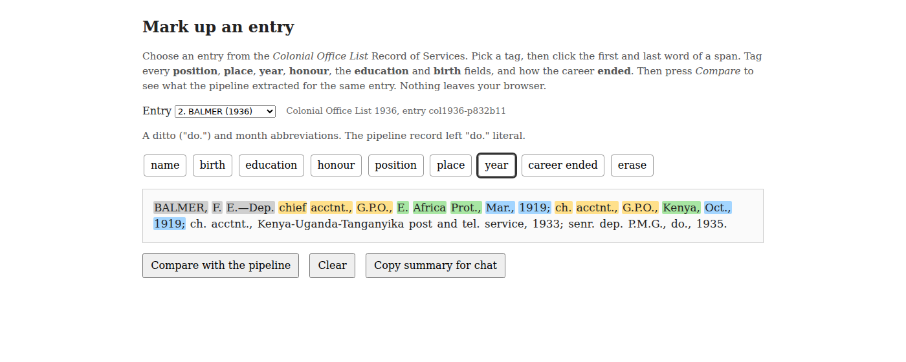
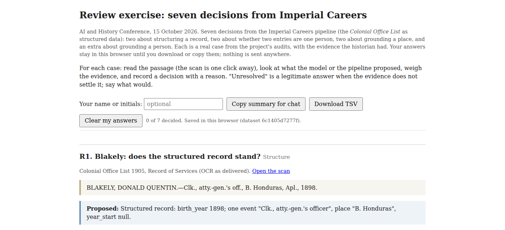

One dataset, start to finish, with a coding agent
2026-10-15
46,926 officials
305,164 career events
211,581 of them on the map
Two printed reference books. One historian, a coding agent, a few months.
| Trading Consequences, 2013 | Imperial Careers, 2026 | |
|---|---|---|
| Clean | OCR turned “lime” into “time”; fixes hand-built by a team | OCR garbles a surname; a merge rule and a ledger |
| Structure | A six-stage pipeline built by computational linguists | A prompt, and a cheap model overnight |
| Ground | A gazetteer, matched by string; every “Italy” landed in Texas | Wikidata, matched by meaning; “Victoria” six ways |
Five institutions and a grant. Of the places it found, six in ten were right; of the places there, it found six in ten. One historian and a coding agent.
| The question | You decide | |
|---|---|---|
| Structure | What is a record here? | What counts as an event |
| Clean | One person or two? | Merge, keep apart, review |
| Ground | Which place, which person? | Supported, unresolved, wrong |
The model does everything around the decision, a hundred thousand times.
Build. Extract. Visualise. See. Fix. Rerun.
The atlas was built to answer a question. It turned out to be the best error detector the project had.
BALMER, F. E.—Dep. chief acctnt., G.P.O., E. Africa Prot., Mar., 1919; ch. acctnt., G.P.O., Kenya, Oct., 1919; ch. acctnt., Kenya-Uganda-Tanganyika post and tel. service, 1933; senr. dep. P.M.G., do., 1935.
85 volumes, 1883 to 1966. 1,400 to 2,900 entries in each. The same man in forty of them.

jimclifford.ca/imperial-careers-workshop/annotate/ or the paper. Three minutes.
What is a record here?
| 1. Python | a grammar for the entry shape | refuses anything it cannot fully parse |
| 2. Qwen3.6-35B | one entry in, one JSON object out | run-on, ditto and concurrent clauses |
| 3. Python | every place and year checked against the source | systematic errors fixed by rule |
30,496 entries · 8.2 hours · 1 a second · 55 failures
Extract ONLY what is printed; never invent or infer facts.
events: one object per distinct posting. EXPLODE compound clauses.
place: as printed. No place in the clause? Carry the previous one and say so.
birth_year: only if printed. NEVER infer from the earliest career date.
Every rule is there because a run broke it.
186 sampled · 69% clean · 3% major
| Source | Record |
|---|---|
| “senr. dep. P.M.G., do., 1935” | place: “do.” |
| “BLAKELY … atty.-gen.’s off., B. Honduras, Apl., 1898.” | birth_year: 1898 |
| “KT. BACH. (1920)” | two honours: KT; BACH |
The errors are systematic, so the fixes are rules:
KT + BACH into Knight BachelorEvery change logged on the record. Zero cost per entry.
One person or two?
A missed link is recoverable. A false merge is not. Ties resolve to no merge.
Deterministic passes first: zero false merges on 543 hand-checked careers. Then a model argues each leftover cluster from a dossier. 917 so far, each with its reason.
ABERY, Joseph
M.B.C.M. · 1867 Ceylon, asst. colonial surgeon · one edition
CARBERY, Joseph
M.B.C.M. · 1867 Ceylon, asst. colonial surgeon · six editions
Merge. An OCR garble with one identical event.
A’BECKETT, Thomas, b. 1836
Lincoln’s Inn · Victorian puisne judge · knighted 1909
BECKETT, Thomas Rumbold, b. 1898
Judd School · Nigeria, telegraph engineer
Keep apart. Sixty-two years and nothing shared.
Which place, which person?
Every arc needs coordinates for “the Central Provinces”, “British Guiana”, “Jodhpur”.
Wikidata has the item, or the capital that has the coordinates. One query.
And: a historian of the Cape and a historian of Bombay who both ground to Q1800510 have joined their data without meeting.
0 of 16
Gemini 3.8 Flash, no tools, the same twenty entries.
Alfred Sharpe → a species of orchid. Richard Wilkinson → Thoth. Nyasaland → a disambiguation page. Joseph Chamberlain → a Swiss footballer.
It knew who. It did not know the number.
| No tools | Pipeline | Opus, retrieval | Astra, retrieval | |
|---|---|---|---|---|
| People right | 0 of 16 | 12 of 12 given | 16 of 16 | 16 of 16 |
| Places | 38 of 104, modern | 3,207 surfaces | 17 of 138, stopped | 104, period entities |
| Time | 5 min | overnight, corpus | 20 min | 27 min |
27 minutes for 20 entries is 25 days for one List. The retrieval columns are the review queue, not the corpus.
| Seen on the map | Cause | Fix |
|---|---|---|
| A premier of British Columbia with a seat in Melbourne | “Victoria” grounded once, by string | Resolve per person |
| The Union of South Africa at Harare: 960 events | “South Africa” matched inside “British South Africa Company” | Five cache rows; a guard on the join |
| Two Baluchistans | One under Q843, Pakistan | One canonical row |
Fix the rule, re-emit both corpora, look at everyone the rule touched.
76%
of the judge’s “different” verdicts were wrong in the rare-surname, overlapping-era stratum.
No map shows a missed merge. For that: 200 hand-labelled cases, risky strata oversampled.

jimclifford.ca/imperial-careers-workshop/review/
Structure Blakely, Balmer
Clean Abery, A’Beckett
Ground South Africa, Brewster
Extra Price
Write the reason.
Zoom: Copy summary for chat.
| You decide | ||
|---|---|---|
| Structure | What is a record here? | What counts as an event |
| Clean | One person or two? | Merge, keep apart, review |
| Ground | Which place, which person? | Supported, unresolved, wrong |
jimclifford.ca/imperial-careers-workshop · data jimclifford.ca/col_matching
jimclifford.ca/imperial-careers-workshop